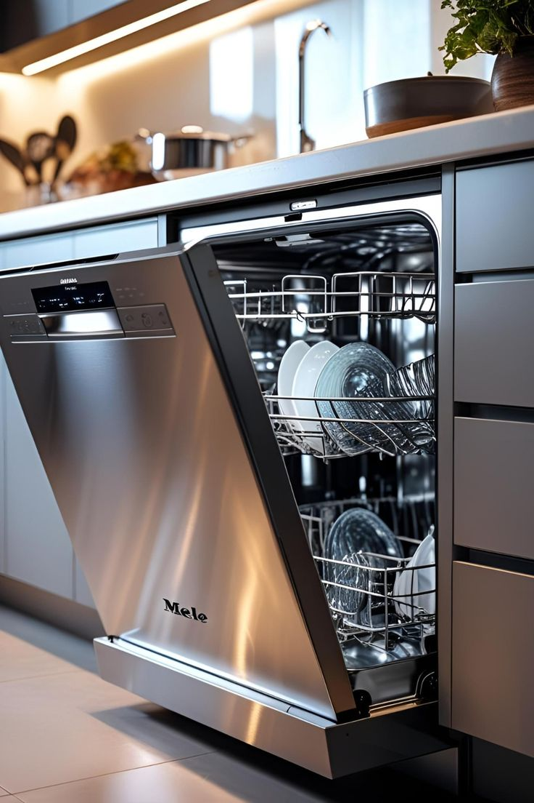

عند توقف غسالة الأطباق عن العمل أو عدم استجابة الأزرار أو وميض الأضواء، قد تكون المشكلة في قفل الباب أو الفيوز أو لوحة التحكم الإلكترونية. نتتبع الدائرة الكهربائية للجهاز خطوة بخطوة لنصل إلى العطل الحقيقي دون تغيير قطع لا داعي لها.
الأعراض
- الجهاز لا يعمل عند الضغط على زر التشغيل
- أزرار لا تستجيب أو شاشة مطفأة
- أضواء تومض أو رمز خطأ يتكرر
- توقف الدورة في منتصفها
- الباب يبدو مغلقًا لكن الجهاز لا يتعرّف على ذلك
الأسباب الشائعة
- عطل قفل الباب أو مفتاحه
- فيوز أو مشكلة في التغذية الكهربائية
- تلف في لوحة التحكم بسبب الرطوبة
- عطل في الريليه أو الوصلات الداخلية
كيف نعالج المشكلة
فحص التغذية الكهربائية
نتأكد من وصول التيار وسلامة الفيوز والمقبس.
اختبار قفل الباب والمفاتيح
نفحص قفل الباب ومفاتيح الأمان التي تسمح بتشغيل الدورة.
فحص لوحة التحكم
نقرأ رموز الخطأ ونفحص اللوحة والوصلات.
الإصلاح أو الاستبدال
نصلح أو نستبدل المكوّن التالف ونجرّب الجهاز.
نصائح قبل وصول الفني
- جرّب مقبس الكهرباء بجهاز آخر للتأكد من وصول التيار.
- افصل الجهاز لدقائق ثم أعد تشغيله لإعادة ضبطه.
- لا تفتح اللوحة بنفسك لخطورة التيار الكهربائي.
أسئلة شائعة
هل تُصلح اللوحة الإلكترونية أم تُستبدل؟
نفحص اللوحة ونوضح لك إن كان الأنسب إصلاحها أو استبدالها قبل أي خطوة.
ماذا تعني رموز الخطأ؟
لكل ماركة رموزها الخاصة، ونستخدمها كدليل أولي للتشخيص ثم نتحقق منها بالفحص.
الماركات التي نتعامل معها
- بوش
- سيمنز
- بيكو
- إل جي
- سامسونج
- أريستون
- زانوسي
- إلكترولوكس
- كاندي
- ويرلبول
- ميلي
- تيكا